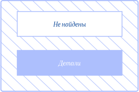
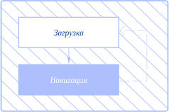
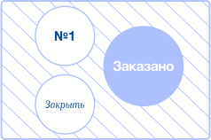
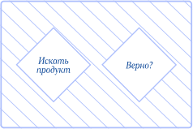

Линии со стрелками — самая важная часть «пользовательского потока», поскольку линии со стрелками связывают все воедино и определяют поток по диаграмме. Линии со стрелками ведут читателя по диаграмме от формы к форме, сверху вниз или слева направо.
Круг используется в основном для отображения действия. Они показывают задачу, которая должна быть выполнена, или шаги, которые необходимо предпринять. Используйте круг, когда вы хотите представить процесс, задачу или операцию. Чтобы определить, правильно ли вы используете круг, проверьте, как он помечен. Круги почти всегда помечены глаголом типа «Выбрать товар» или «Отправить заказ».
Обычно называемая «бриллиантом принятия решений», форма всегда задает вопрос. В то время как другие формы могут быть взаимозаменяемы для разных целей, ромб постоянно используется, чтобы показать, когда необходимо принять решение. Возможные ответы на заданный вопрос представлены линиями, выходящими из ромба, и определяют, по какому пути следовать. Например, вы можете задавать вопросы типа «Есть ли у вас учетная запись?» или «Это правильно?» со стрелками «да» и «нет», отходящими от каждого.
4. Уточните свой набросок
Те же принципы, которым вы следуете при проектировании интерфейса, могут и должны применяться при разработке блок-схемы.
Метки — это спасательный круг для читателя при прохождении пользовательского потока. Самая важная метка — это заголовок блок-схемы. Попробуйте использовать заголовок, который точно описывает, что представляет пользовательский поток. Если вы не уверены, что ваш заголовок понятен, попросите коллегу прочитать его еще раз. Избегайте использования всех заглавных букв в надписях, поскольку это, как было показано, снижает удобочитаемость.
Выбирайте цвета с умом. Основная цель цвета в блок- схеме должна заключаться в том, чтобы помочь читателю идентифицировать и группировать ресурсы, а также выделить важные действия пользователя.
Согласованность вашей визуальной структуры может помочь гарантировать, что за вашим «пользовательским потоком» легко следить и он не вводит в заблуждение. Например, фигуры и линейные элементы всегда должны использоваться для одной и той же цели и сопровождаться ключом или легендой.

Пример использования прямоугольника

Пример использования линий

Пример использования круга

Пример использования «бриллианта»